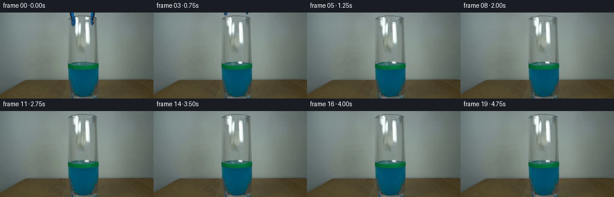
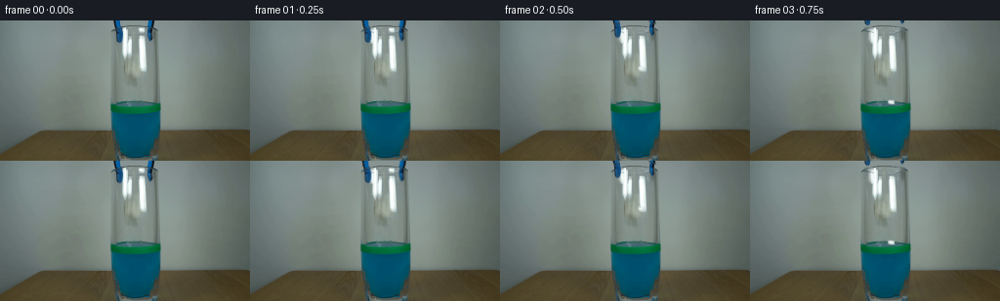
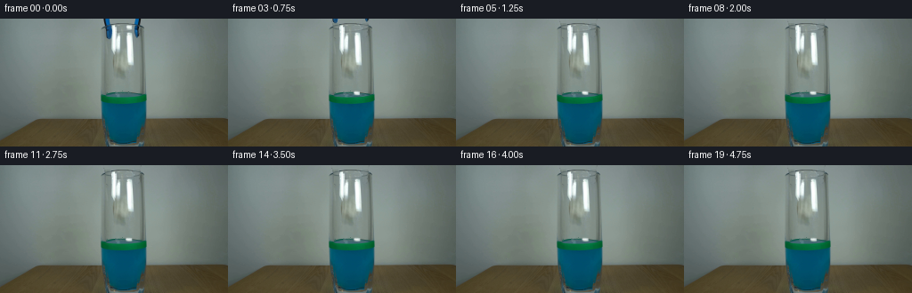
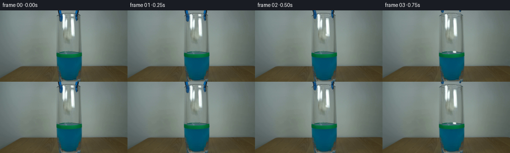

CODING AGENTS AS PIXEL WORLD MODELS
traex/GPT-6.1-Sol · 0137
点击播放 · 原生 RGB 像素
逐轮保存的候选
回放视频、检查图与代码变化。
每份候选均可单独播放。实际图片检查记录在下方工具轨迹中。
候选 01播放与检查图
点击播放 · 原生 RGB 像素


展开代码变化
--- 上一保存版本
+++ 本次保存版本
@@ -0,0 +1,188 @@
+"""A fixed-camera, image-derived paper-release demonstration."""
+from pathlib import Path
+import math
+import cv2
+import numpy as np
+from PIL import Image, ImageDraw
+from scipy.ndimage import gaussian_filter
+import artifact_io
+
+ROOT = Path(__file__).resolve().parent
+H, W = 144, 256
+
+
+def poly_mask(points, scale=4):
+ im = Image.new('L', (W * scale, H * scale))
+ ImageDraw.Draw(im).polygon([(round(x*scale), round(y*scale)) for x,y in points], fill=255)
+ return np.asarray(im.resize((W,H),Image.Resampling.LANCZOS)).astype(np.float32)/255
+
+
+def composite(dst, col, a):
+ return dst*(1-a[...,None]) + col*a[...,None]
+
+
+def transformed(col, alpha, matrix):
+ # Warp premultiplied colour to avoid the dark fringes of a cutout.
+ a = cv2.warpAffine(alpha, matrix, (W,H), flags=cv2.INTER_LINEAR)
+ p = cv2.warpAffine(col*alpha[...,None], matrix, (W,H), flags=cv2.INTER_LINEAR)
+ c = p / np.maximum(a[...,None], 1e-6)
+ return c, a
+
+
+def main():
+ initial = np.asarray(Image.open(ROOT/'first_frame.png').convert('RGB'))
+ rgb = initial.astype(np.float32)
+ yy,xx = np.mgrid[:H,:W].astype(np.float32)
+
+ # The two blue/black blades; all selection is from the supplied RGB.
+ left_region = poly_mask([(115.6,-1),(123.2,-1),(124.5,6.4),(125.7,9),
+ (126.1,18),(125.3,21.5),(124,23.1),(120.7,23.2),
+ (118.9,20.8),(118.8,10),(117,6)])
+ right_region = poly_mask([(150.8,-1),(158.2,-1),(158,5.2),(157.8,8.2),
+ (156.2,11.8),(155.8,18.7),(154.8,21.6),
+ (152.2,21.6),(151.1,19.5),(150.8,14.6),
+ (150.6,9),(150.0,7)])
+ lum = rgb.mean(-1)
+ blue = np.clip((rgb[...,2]-rgb[...,0]-17)/22,0,1)
+ dark = np.clip((111-lum)/32,0,1)
+ left = left_region*np.maximum(blue,dark)
+ right = right_region*np.maximum(blue,dark)
+ tool_mask = np.maximum(left,right)
+ hole = (tool_mask>0.07).astype(np.uint8)*255
+ hole = cv2.dilate(hole,np.ones((3,3),np.uint8),iterations=1)
+ # Classical pixel interpolation only, no learned inpainting.
+ tool_clean = cv2.inpaint(initial,hole,4,cv2.INPAINT_TELEA).astype(np.float32)
+ # Recover the thin oval lip under the two blades. The remaining lip and
+ # the long highlights on the glass are kept entirely stationary.
+ rim = np.sqrt(((xx-138.7)/22.4)**2 + ((yy-9.0)/3.25)**2)
+ rim_alpha = np.exp(-((rim-1.0)/0.12)**2)*0.56
+ rim_alpha *= (hole>0)*(yy>=5)*(yy<=12)
+ rim_col=np.zeros_like(rgb)+np.array([71,87,88],np.float32)
+ tool_clean=composite(tool_clean,rim_col,rim_alpha)
+ clean_blend=np.clip(gaussian_filter((hole>0).astype(np.float32),.55),0,1)
+ tool_clean=composite(rgb,tool_clean,clean_blend)
+
+ # Small folded white wad at the inside edge of the lip. Extract its
+ # anti-aliased luminous silhouette rather than moving a rectangular crop.
+ paper_region=poly_mask([(142.2,7.2),(145.3,7.0),(147.5,7.8),
+ (148.1,9.1),(148.3,11.2),(147.6,12.3),
+ (144.7,12.7),(142.2,11.7),(141.5,9.6)])
+ paper_alpha=paper_region*np.clip((lum-145)/78,0,1)
+ phole=(paper_alpha>.035).astype(np.uint8)*255
+ paper_background=cv2.inpaint(np.clip(tool_clean,0,255).astype(np.uint8),
+ phole,3,cv2.INPAINT_TELEA).astype(np.float32)
+ # The original luminous patch is reconstructed exactly while still held.
+ # This also recovers the photograph's folded texture, not a drawn symbol.
+ paper_alpha=np.clip(paper_alpha,0,1)
+ # Background immediately behind the paper is grey glass, not a new white
+ # reflection propagated by inpainting from the neighbouring highlight.
+ local_bg=np.zeros_like(rgb)
+ for y in range(H):
+ local_bg[y,:] = tool_clean[y,138:141].mean(0)
+ paper_bg=composite(tool_clean,local_bg,paper_region)
+ clean=paper_bg.copy()
+ # Synthesize foreground from observed composite; maintain soft edge.
+ pa=np.maximum(paper_alpha,.001)
+ paper_color=(rgb-clean*(1-paper_alpha[...,None]))/pa[...,None]
+ paper_color=np.clip(paper_color,0,255)
+ # Use an accurate residual for the initially held paper, including its
+ # soft defocus fringe. It is only 8 pixels across in this locked shot.
+ source_delta=(rgb-clean)*paper_region[...,None]
+ # A compact sprite, including the edge pixels that belong to the wad.
+ sprite_alpha=np.clip(paper_region*np.clip((lum-140)/65,0,1),0,1)
+ sprite_color=(rgb-clean*(1-sprite_alpha[...,None]))/np.maximum(sprite_alpha[...,None],.001)
+ sprite_color=np.clip(sprite_color,0,255)
+
+ # Reflections on the glass remain above moving material seen through it.
+ glass_high=np.clip((lum-174)/100,0,1)
+ glass_high*=((yy>15)&(yy<77)&(xx>124)&(xx<151)).astype(np.float32)*.22
+ liquid_interior=((xx>115)&(xx<164)&(yy>82)&(yy<137)).astype(np.float32)
+ surface_inside=((xx-139)/23.2)**2+((yy-85.5)/4.0)**2<1
+
+ frames=[initial.copy()]
+ release=.29
+ g=1800.0
+ y0=9.7
+ surface_y=83.5
+ impact=release+math.sqrt(2*(surface_y-y0)/g)
+
+ for i in range(1,20):
+ t=i/4
+ out=clean.copy()
+ # Millimetres of jaw separation precede release; then smoothly lift
+ # the complete empty grabber back out of the top of the fixed frame.
+ opened=min(t/.34,1.0)
+ sep=2.0*(opened*opened*(3-2*opened))
+ lift=0.0 if t<.34 else 56.0*max(0,t-.34)**1.28
+ for a,dx in [(left,-sep),(right,sep)]:
+ m=np.array([[1,0,dx],[0,1,-lift]],np.float32)
+ c,am=transformed(rgb,a,m)
+ out=composite(out,c,am)
+
+ # The water disturbance is small: expanding capillary rings confined
+ # to the original liquid ellipse, followed by damped local motion.
+ since=t-impact
+ if since>0:
+ env=math.exp(-since*2.35)
+ rad=np.sqrt((xx-144.2)**2+((yy-85.5)*5.0)**2)
+ rings=np.sin(rad*1.03-since*16.0)*np.exp(-((rad-(3+since*17)) / 9)**2)
+ w=env*rings*surface_inside
+ out += w[...,None]*np.array([7,13,13],np.float32)
+ # Delicate refracted movement underneath the surface. Neither
+ # the printed water-level band nor the glass walls wobble.
+ deep=liquid_interior*(yy>=95)*np.exp(-(yy-95)/10)
+ shimmer=env*np.sin((xx-144)*.57+since*13)*deep
+ out+=shimmer[...,None]*np.array([.4,1.9,2.1],np.float32)
+
+ if t<release:
+ # Exact photographic appearance while the jaws begin opening.
+ out += source_delta
+ else:
+ tau=t-release
+ if t<impact:
+ py=y0+.5*g*tau*tau
+ px=145.0-1.3*tau
+ angle=-14+tau*64
+ sx,sy=1.,1.
+ wet=0.
+ else:
+ u=t-impact
+ px=144.5+.8*(1-math.exp(-u/2.2))+.28*math.sin(u*1.9)
+ py=83.3+.42*(1-math.exp(-u/1.4))+.75*math.exp(-u*2.8)*math.sin(u*11)
+ angle=2.8*math.sin(u*2.6)*math.exp(-u*.55)
+ # Soft collapse into a slightly flatter floating wad.
+ sx=1.08+.10*(1-math.exp(-u*2))
+ sy=.9-.12*(1-math.exp(-u*2))
+ wet=1-math.exp(-u/1.7)
+ angle=math.radians(angle)
+ cs, sn=math.cos(angle),math.sin(angle)
+ a00,a01=sx*cs,-sy*sn
+ a10,a11=sx*sn,sy*cs
+ mat=np.array([[a00,a01,px-a00*145-a01*y0],
+ [a10,a11,py-a10*145-a11*y0]],np.float32)
+ pc,am=transformed(sprite_color,sprite_alpha,mat)
+ # Gentle blue tint as the bottom of the paper becomes wetted;
+ # the upper facets retain their original white.
+ pc=pc*(1-.07*wet)+np.array([3,5,4],np.float32)*wet
+ below=np.clip((yy-85.0)/3.0,0,1)
+ pc=pc*(1-below[...,None]*.60)+np.array([13,103,124],np.float32)*below[...,None]*.60
+ # Surface and front green band occlude the back half of the wad.
+ occlusion=np.clip((88.0-yy)/1.8,0,1)
+ am*=occlusion*(xx>115)*(xx<164)
+ am*=1-glass_high
+ out=composite(out,pc,am)
+ if since>0 and since<.45:
+ # A tiny meniscus lifted against the wet paper on impact.
+ ma=np.exp(-((xx-px)/5)**2-((yy-86.1)/.8)**2)*.18*math.exp(-since*6)
+ ma*=surface_inside
+ out=composite(out,np.zeros_like(out)+[33,132,133],ma)
+
+ frames.append(np.clip(np.rint(out),0,255).astype(np.uint8))
+
+ frames=np.stack(frames)
+ assert np.array_equal(frames[0], initial)
+ artifact_io.save(frames, ROOT)
+
+
+if __name__=='__main__':
+ main()
候选 02播放与检查图
点击播放 · 原生 RGB 像素


展开代码变化
--- 上一保存版本
+++ 本次保存版本
@@ -52,6 +52,27 @@
hole = cv2.dilate(hole,np.ones((3,3),np.uint8),iterations=1)
# Classical pixel interpolation only, no learned inpainting.
tool_clean = cv2.inpaint(initial,hole,4,cv2.INPAINT_TELEA).astype(np.float32)
+ # Do not extend the white glass highlights into the removed blue jaws:
+ # interpolate the empty clear-wall profiles from the nearby visible wall.
+ wall_left=rgb[24:31].mean(0)
+ wall_right=rgb[23:30].mean(0)
+ for y in range(24):
+ for x in range(115,159):
+ if hole[y,x]==0:
+ continue
+ if y<5:
+ frac=(x-113)/49
+ tool_clean[y,x]=rgb[y,113]*(1-frac)+rgb[y,162]*frac
+ elif y>12:
+ if x<126:
+ correction=(rgb[y,113]-rgb[27,113])*.40
+ tool_clean[y,x]=wall_left[x]+correction
+ elif x>149 and x<157:
+ correction=(rgb[y,166]-rgb[27,166])*.40
+ tool_clean[y,x]=wall_right[x]+correction
+ elif x<125 or (150<x<157):
+ wall=wall_left if x<126 else wall_right
+ tool_clean[y,x]=wall[x]+(rgb[y,113]-rgb[27,113])*.35
# Recover the thin oval lip under the two blades. The remaining lip and
# the long highlights on the glass are kept entirely stationary.
rim = np.sqrt(((xx-138.7)/22.4)**2 + ((yy-9.0)/3.25)**2)
@@ -59,7 +80,7 @@
rim_alpha *= (hole>0)*(yy>=5)*(yy<=12)
rim_col=np.zeros_like(rgb)+np.array([71,87,88],np.float32)
tool_clean=composite(tool_clean,rim_col,rim_alpha)
- clean_blend=np.clip(gaussian_filter((hole>0).astype(np.float32),.55),0,1)
+ clean_blend=np.clip(gaussian_filter((tool_mask>0.025).astype(np.float32),.40),0,1)
tool_clean=composite(rgb,tool_clean,clean_blend)
# Small folded white wad at the inside edge of the lip. Extract its
可观测工具轨迹
实际执行的命令与返回图片。
命令 1exit 0
/bin/bash -lc "ls -la && cat prompt.txt && printf '\\n---RULES---\\n' && cat GENERATION_RULES.md"
命令 2exit 0
/bin/bash -lc "cat artifact_io.py && python - <<'PY'
from PIL import Image
import numpy as np
im=np.array(Image.open('first_frame.png').convert('RGB'))
print(im.shape)
# downsample RGB categories
for y in range(0,144,3):
s=''
for x in range(0,256,3):
r,g,b=im[y:y+3,x:x+3].mean((0,1)); v=(r+g+b)/3
if b>r*1.25 and b>g*1.06: c='B' if b>90 else 'b'
elif g>r*1.18 and g>b*1.06: c='G'
elif max(r,g,b)-min(r,g,b)<20: c='@' if v<35 else '#' if v<75 else '+' if v<130 else '.' if v<190 else ' '
elif r>g*1.3: c='R'
else: c='o' if v<100 else '-'
s+=c
print(s)
PY"命令 3exit 0
/bin/bash -lc "python - <<'PY'
from PIL import Image
import numpy as np
im=np.array(Image.open('first_frame.png').convert('RGB'))
# greyscale ascii section x100:178 with 1 pixel resolution y0:100 (2 rows avg)
cs='@%#*+=-:. '
for y in range(0,100,2):
a=im[y:y+2,100:178].mean(0)
g=a.mean(1)
print(f'{y:3d} '+''.join(cs[min(9,int(v/256*10))] for v in g))
print('Samples row by row x112..172 every 4')
for y in range(0,144,4):
print(y,[(x,im[y,x].tolist()) for x in range(112,173,4)])
PY"命令 4exit 0
/bin/bash -lc "python - <<'PY'
from PIL import Image
import numpy as np
im=np.array(Image.open('first_frame.png'))
for y in range(0,76):
st=''
for x in range(109,172):
r,g,b=im[y,x].astype(float); v=(r+g+b)/3
if b-r>30: c='B' if v>65 else 'b'
elif v>245: c='W'
elif v>210:c='w'
elif v>180:c=':'
elif v>165:c=';'
elif v>155:c='.'
elif v>140:c=' '
elif v>130:c='-'
elif v>120:c='='
elif v>110:c='+'
elif v>100:c='*'
elif v>90:c='X'
elif v>65:c='#'
else:c='@'
st+=c
print(f'{y:02} {st}')
print('center crop top rows numeric RGB')
for y in range(0,23):
print(y, ' '.join(f'{im[y,x].mean():.0f}' for x in range(124,150)))
PY"命令 5exit 0
/bin/bash -lc "python - <<'PY'
import numpy as np
from PIL import Image
im=np.array(Image.open('first_frame.png'))
# all RGB outside glass high white pixels? stats
for y in range(0,75):
xs=np.where(np.mean(im[y,:,:],1)>170)[0]
print(y, xs.tolist())
PY"命令 6exit 0
/bin/bash -lc "python - <<'PY'
import numpy as np
from PIL import Image
im=np.array(Image.open('first_frame.png'))
for y in range(4,70):
print(f'{y:2d} '+''.join(' W' if im[y,x].mean()>245 else ' w' if im[y,x].mean()>210 else ' :' if im[y,x].mean()>180 else ' ;' if im[y,x].mean()>165 else ' .' if im[y,x].mean()>150 else ' -' if im[y,x].mean()>140 else ' =' if im[y,x].mean()>130 else ' +' if im[y,x].mean()>115 else ' #' if im[y,x].mean()>95 else ' @' for x in range(120,153)))
PY"命令 7exit 0
/bin/bash -lc "python - <<'PY'
import numpy as np
from PIL import Image
im=np.array(Image.open('first_frame.png'))
for y in range(6,22):
print(y,[(x,tuple(im[y,x])) for x in range(130,142)])
# gradients largest central region
for y in range(7,74):
a=im[y,130:143].astype(float)
print(y, ' '.join('%3d'%v for v in a[:,0]),' | rg ', ' '.join('%2d'%v for v in (a[:,1]-a[:,0])))
PY"命令 8exit 0
/bin/bash -lc "python - <<'PY'
from PIL import Image
import numpy as np
im=np.array(Image.open('first_frame.png'))
# numerical RGB coarse background
for y in [0,8,12,16,20,24,32,40,50,60,70]:
print('row',y,[(x,tuple(im[y,x])) for x in [80,90,100,110,120,130,135,136,137,138,140,145,150,160,170,180,190]])
PY"命令 9exit 0
/bin/bash -lc "python - <<'PY' import importlib.util for m in ['cv2','scipy','numpy','PIL']: print(m, bool(importlib.util.find_spec(m))) PY"
命令 10exit 0
/bin/bash -lc "python - <<'PY'
from PIL import Image
import numpy as np
im=np.asarray(Image.open('first_frame.png')).astype(float)
for y in range(25):
print(y, [(x,tuple(im[y,x].astype(int))) for x in range(113,128)],'RIGHT', [(x,tuple(im[y,x].astype(int))) for x in range(148,159)])
PY"命令 11exit 0
/bin/bash -lc "python - <<'PY'
from PIL import Image
import numpy as np
from scipy.ndimage import gaussian_filter
im=np.asarray(Image.open('first_frame.png')).astype(float)
# compare central below paper to off-axis glass to obtain baseline
for y in range(14,60,2):
print(y, np.round(im[y,120:125].mean(0),1),np.round(im[y,150:155].mean(0),1), np.round(im[y,135:142].mean(0),1))
PY"命令 12exit 0
/bin/bash -lc "mkdir -p .tmp && cat > generate.py <<'PY'
\"\"\"A fixed-camera, image-derived paper-release demonstration.\"\"\"
from pathlib import Path
import math
import cv2
import numpy as np
from PIL import Image, ImageDraw
from scipy.ndimage import gaussian_filter
import artifact_io
ROOT = Path(__file__).resolve().parent
H, W = 144, 256
def poly_mask(points, scale=4):
im = Image.new('L', (W * scale, H * scale))
ImageDraw.Draw(im).polygon([(round(x*scale), round(y*scale)) for x,y in points], fill=255)
return np.asarray(im.resize((W,H),Image.Resampling.LANCZOS)).astype(np.float32)/255
def composite(dst, col, a):
return dst*(1-a[...,None]) + col*a[...,None]
def transformed(col, alpha, matrix):
# Warp premultiplied colour to avoid the dark fringes of a cutout.
a = cv2.warpAffine(alpha, matrix, (W,H), flags=cv2.INTER_LINEAR)
p = cv2.warpAffine(col*alpha[...,None], matrix, (W,H), flags=cv2.INTER_LINEAR)
c = p / np.maximum(a[...,None], 1e-6)
return c, a
def main():
initial = np.asarray(Image.open(ROOT/'first_frame.png').convert('RGB'))
rgb = initial.astype(np.float32)
yy,xx = np.mgrid[:H,:W].astype(np.float32)
# The two blue/black blades; all selection is from the supplied RGB.
left_region = poly_mask([(115.6,-1),(123.2,-1),(124.5,6.4),(125.7,9),
(126.1,18),(125.3,21.5),(124,23.1),(120.7,23.2),
(118.9,20.8),(118.8,10),(117,6)])
right_region = poly_mask([(150.8,-1),(158.2,-1),(158,5.2),(157.8,8.2),
(156.2,11.8),(155.8,18.7),(154.8,21.6),
(152.2,21.6),(151.1,19.5),(150.8,14.6),
(150.6,9),(150.0,7)])
lum = rgb.mean(-1)
blue = np.clip((rgb[...,2]-rgb[...,0]-17)/22,0,1)
dark = np.clip((111-lum)/32,0,1)
left = left_region*np.maximum(blue,dark)
right = right_region*np.maximum(blue,dark)
tool_mask = np.maximum(left,right)
hole = (tool_mask>0.07).astype(np.uint8)*255
hole = cv2.dilate(hole,np.ones((3,3),np.uint8),iterations=1)
# Classical pixel interpolation only, no learned inpainting.
tool_clean = cv2.inpaint(initial,hole,4,cv2.INPAINT_TELEA).astype(np.float32)
# Recover the thin oval lip under the two blades. The remaining lip and
# the long highlights on the glass are kept entirely stationary.
rim = np.sqrt(((xx-138.7)/22.4)**2 + ((yy-9.0)/3.25)**2)
rim_alpha = np.exp(-((rim-1.0)/0.12)**2)*0.56
rim_alpha *= (hole>0)*(yy>=5)*(yy<=12)
rim_col=np.zeros_like(rgb)+np.array([71,87,88],np.float32)
tool_clean=composite(tool_clean,rim_col,rim_alpha)
clean_blend=np.clip(gaussian_filter((hole>0).astype(np.float32),.55),0,1)
tool_clean=composite(rgb,tool_clean,clean_blend)
# Small folded white wad at the inside edge of the lip. Extract its
# anti-aliased luminous silhouette rather than moving a rectangular crop.
paper_region=poly_mask([(142.2,7.2),(145.3,7.0),(147.5,7.8),
(148.1,9.1),(148.3,11.2),(147.6,12.3),
(144.7,12.7),(142.2,11.7),(141.5,9.6)])
paper_alpha=paper_region*np.clip((lum-145)/78,0,1)
phole=(paper_alpha>.035).astype(np.uint8)*255
paper_background=cv2.inpaint(np.clip(tool_clean,0,255).astype(np.uint8),
phole,3,cv2.INPAINT_TELEA).astype(np.float32)
# The original luminous patch is reconstructed exactly while still held.
# This also recovers the photograph's folded texture, not a drawn symbol.
paper_alpha=np.clip(paper_alpha,0,1)
# Background immediately behind the paper is grey glass, not a new white
# reflection propagated by inpainting from the neighbouring highlight.
local_bg=np.zeros_like(rgb)
for y in range(H):
local_bg[y,:] = tool_clean[y,138:141].mean(0)
paper_bg=composite(tool_clean,local_bg,paper_region)
clean=paper_bg.copy()
# Synthesize foreground from observed composite; maintain soft edge.
pa=np.maximum(paper_alpha,.001)
paper_color=(rgb-clean*(1-paper_alpha[...,None]))/pa[...,None]
paper_color=np.clip(paper_color,0,255)
# Use an accurate residual for the initially held paper, including its
# soft defocus fringe. It is only 8 pixels across in this locked shot.
source_delta=(rgb-clean)*paper_region[...,None]
# A compact sprite, including the edge pixels that belong to the wad.
sprite_alpha=np.clip(paper_region*np.clip((lum-140)/65,0,1),0,1)
sprite_color=(rgb-clean*(1-sprite_alpha[...,None]))/np.maximum(sprite_alpha[...,None],.001)
sprite_color=np.clip(sprite_color,0,255)
# Reflections on the glass remain above moving material seen through it.
glass_high=np.clip((lum-174)/100,0,1)
glass_high*=((yy>15)&(yy<77)&(xx>124)&(xx<151)).astype(np.float32)*.22
liquid_interior=((xx>115)&(xx<164)&(yy>82)&(yy<137)).astype(np.float32)
surface_inside=((xx-139)/23.2)**2+((yy-85.5)/4.0)**2<1
frames=[initial.copy()]
release=.29
g=1800.0
y0=9.7
surface_y=83.5
impact=release+math.sqrt(2*(surface_y-y0)/g)
for i in range(1,20):
t=i/4
out=clean.copy()
# Millimetres of jaw separation precede release; then smoothly lift
# the complete empty grabber back out of the top of the fixed frame.
opened=min(t/.34,1.0)
sep=2.0*(opened*opened*(3-2*opened))
lift=0.0 if t<.34 else 56.0*max(0,t-.34)**1.28
for a,dx in [(left,-sep),(right,sep)]:
m=np.array([[1,0,dx],[0,1,-lift]],np.float32)
c,am=transformed(rgb,a,m)
out=composite(out,c,am)
# The water disturbance is small: expanding capillary rings confined
# to the original liquid ellipse, followed by damped local motion.
since=t-impact
if since>0:
env=math.exp(-since*2.35)
rad=np.sqrt((xx-144.2)**2+((yy-85.5)*5.0)**2)
rings=np.sin(rad*1.03-since*16.0)*np.exp(-((rad-(3+since*17)) / 9)**2)
w=env*rings*surface_inside
out += w[...,None]*np.array([7,13,13],np.float32)
# Delicate refracted movement underneath the surface. Neither
# the printed water-level band nor the glass walls wobble.
deep=liquid_interior*(yy>=95)*np.exp(-(yy-95)/10)
shimmer=env*np.sin((xx-144)*.57+since*13)*deep
out+=shimmer[...,None]*np.array([.4,1.9,2.1],np.float32)
if t<release:
# Exact photographic appearance while the jaws begin opening.
out += source_delta
else:
tau=t-release
if t<impact:
py=y0+.5*g*tau*tau
px=145.0-1.3*tau
angle=-14+tau*64
sx,sy=1.,1.
wet=0.
else:
u=t-impact
px=144.5+.8*(1-math.exp(-u/2.2))+.28*math.sin(u*1.9)
py=83.3+.42*(1-math.exp(-u/1.4))+.75*math.exp(-u*2.8)*math.sin(u*11)
angle=2.8*math.sin(u*2.6)*math.exp(-u*.55)
# Soft collapse into a slightly flatter floating wad.
sx=1.08+.10*(1-math.exp(-u*2))
sy=.9-.12*(1-math.exp(-u*2))
wet=1-math.exp(-u/1.7)
angle=math.radians(angle)
cs, sn=math.cos(angle),math.sin(angle)
a00,a01=sx*cs,-sy*sn
a10,a11=sx*sn,sy*cs
mat=np.array([[a00,a01,px-a00*145-a01*y0],
[a10,a11,py-a10*145-a11*y0]],np.float32)
pc,am=transformed(sprite_color,sprite_alpha,mat)
# Gentle blue tint as the bottom of the paper becomes wetted;
# the upper facets retain their original white.
pc=pc*(1-.07*wet)+np.array([3,5,4],np.float32)*wet
below=np.clip((yy-85.0)/3.0,0,1)
pc=pc*(1-below[...,None]*.60)+np.array([13,103,124],np.float32)*below[...,None]*.60
# Surface and front green band occlude the back half of the wad.
occlusion=np.clip((88.0-yy)/1.8,0,1)
am*=occlusion*(xx>115)*(xx<164)
am*=1-glass_high
out=composite(out,pc,am)
if since>0 and since<.45:
# A tiny meniscus lifted against the wet paper on impact.
ma=np.exp(-((xx-px)/5)**2-((yy-86.1)/.8)**2)*.18*math.exp(-since*6)
ma*=surface_inside
out=composite(out,np.zeros_like(out)+[33,132,133],ma)
frames.append(np.clip(np.rint(out),0,255).astype(np.uint8))
frames=np.stack(frames)
assert np.array_equal(frames[0], initial)
artifact_io.save(frames, ROOT)
if __name__=='__main__':
main()
PY
python generate.py"命令 13exit 0
/bin/bash -lc "python - <<'PY'
from PIL import Image
import numpy as np
for k in [0,1,2,3,5,10,19]:
im=np.asarray(Image.open(f'frames/{k:02d}.png'))
print('FRAME',k)
for y in range(0,28,2):
s=''
for x in range(112,164):
r,g,b=im[y,x].astype(float);l=(r+g+b)/3
c='B' if b-r>30 else 'W' if l>240 else 'w' if l>205 else ':' if l>170 else ' ' if l>135 else '-' if l>125 else '+' if l>100 else '#' if l>75 else '@'
s+=c
print(y,s)
print('wad pixel positions brighter than 180 x138:152 y76:90',[(y,np.where(im[y,138:152].mean(-1)>180)[0].tolist()) for y in range(76,90)])
base=np.asarray(Image.open('first_frame.png'))
final=np.asarray(Image.open('frames/19.png'))
dif=np.max(np.abs(final.astype(int)-base.astype(int)),-1)
print('final changed',np.count_nonzero(dif),' bbox',np.where(dif>0)[1].min(),np.where(dif>0)[1].max(),np.where(dif>0)[0].min(),np.where(dif>0)[0].max())
PY"命令 14exit 0
/bin/bash -lc "python - <<'PY'
p='generate.py'
s=open(p).read()
s=s.replace(\" # Recover the thin oval lip under the two blades.\",\" # Recover the thin oval lip under the two blades.\")
needle=\" # Recover the thin oval lip under the two blades. The remaining lip and\\n\"
insert=\"\"\" # Do not extend the white glass highlights into the removed blue jaws:
# interpolate the empty clear-wall profiles from the nearby visible wall.
wall_left=rgb[24:31].mean(0)
wall_right=rgb[23:30].mean(0)
for y in range(24):
for x in range(115,159):
if hole[y,x]==0:
continue
if y<5:
frac=(x-113)/49
tool_clean[y,x]=rgb[y,113]*(1-frac)+rgb[y,162]*frac
elif y>12:
if x<126:
correction=(rgb[y,113]-rgb[27,113])*.40
tool_clean[y,x]=wall_left[x]+correction
elif x>149 and x<157:
correction=(rgb[y,166]-rgb[27,166])*.40
tool_clean[y,x]=wall_right[x]+correction
elif x<125 or (150<x<157):
wall=wall_left if x<126 else wall_right
tool_clean[y,x]=wall[x]+(rgb[y,113]-rgb[27,113])*.35
\"\"\"
s=s.replace(needle,insert+needle)
# Retain photographic left reflection exactly. Only replacing pixels for genuine tool matte.
s=s.replace(\"clean_blend=np.clip(gaussian_filter((hole>0).astype(np.float32),.55),0,1)\",\"clean_blend=np.clip(gaussian_filter((tool_mask>0.025).astype(np.float32),.40),0,1)\")
open(p,'w').write(s)
PY
python generate.py
python - <<'PY'
import numpy as np
from PIL import Image
f=np.stack([np.asarray(Image.open(f'frames/{k:02d}.png')) for k in range(20)])
a=np.asarray(Image.open('first_frame.png'))
assert f.shape==(20,144,256,3) and f.dtype==np.uint8 and np.array_equal(a,f[0])
print('Validated:',f.shape,f.dtype)
print('Files:',__import__('os').listdir('.'))
PY"命令 15exit 0
/bin/bash -lc "python - <<'PY'
from PIL import Image
import numpy as np
im=np.asarray(Image.open('frames/19.png'))
for y in range(0,26,2):
print(y, ''.join('B' if int(im[y,x,2])-int(im[y,x,0])>30 else 'W' if im[y,x].mean()>240 else 'w' if im[y,x].mean()>205 else ':' if im[y,x].mean()>170 else ' ' if im[y,x].mean()>135 else '-' if im[y,x].mean()>125 else '+' if im[y,x].mean()>100 else '#' if im[y,x].mean()>75 else '@' for x in range(112,164)))
PY"保存候选 2 份；完成命令 15 次；可验证图片返回 0 张。原始 API 响应与完整日志保留在本地。